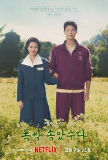

Un thriller psicológico que explora la mente de un asesino serial y cuestiona si el mal es algo con lo que se nace.
Disponible en: Viki
Ver dorama
Un dorama inspirador sobre segundas oportunidades, sanación emocional y encontrar sentido a la vida a través de pequeñas decisiones.
Disponible en: Netflix
Ver doramaUn grupo de ángeles de la muerte trabaja para prevenir suicidios, mostrando historias humanas cargadas de empatía y esperanza.
Disponible en: Netflix
Ver dorama